Next: Multiple Molecules and Scripting
Up: VMD Tutorial
Previous: Introduction
Subsections
Basics of VMD
In this unit you will build a nice image of ubiquitin while
becoming accustomed to basic VMD commands. In addition, you will learn how
to look for interesting structural properties of proteins using VMD.
Our first step is to load our molecule. A pdb
file,
1UBQ.pdb, that contains the atom coordinates of ubiquitin
is provided with the tutorial.
- 1
- Choose the File
 New Molecule... menu item Fig 1(a)
in the VMD Main window. Another window, the Molecule
File Browser (b), will appear in your screen.
New Molecule... menu item Fig 1(a)
in the VMD Main window. Another window, the Molecule
File Browser (b), will appear in your screen.
- 2
- Use the Browse... (c)
button to find the file
1UBQ.pdb in the appropriate directory. Note that when you select
the file, you will be back in the Molecule File Browser window.
In order to actually load the file you have to press Load
(d). Do not forget to do this!
Figure 1:
Loading a Molecule.
| 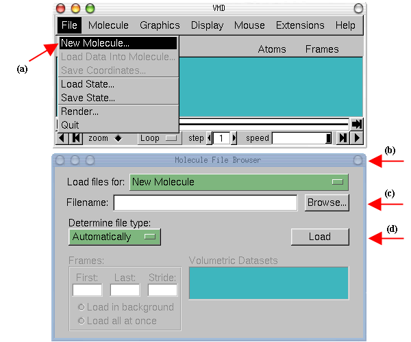 |
Now, ubiquitin is shown in your
screen in the OpenGL Display window. You may close the Molecule File Browser window
at any time.
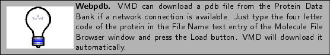
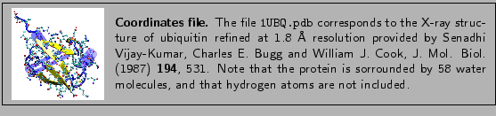
In order to see the 3D structure of our protein we will use the mouse
and its multiple modes.
- 1
- In the OpenGL Display, press the first (left) mouse button down and move the mouse. Explore what
happens. This is the rotation mode of the mouse and allows you to rotate
the molecule around an axis parallel to the screen Fig.
2(a).
Figure 2:
Rotation modes.
| 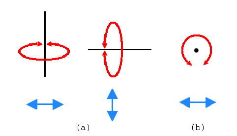 |
- 2
- If you press the second (right) button and repeat the previous step,
the rotation will be done around an axis perpendicular to your screen (b) (For Mac users, the second button
is equivalent to hitting the command key while pressing the mouse button).
- 3
- In the VMD Main window, look at the Mouse menu (Fig 3). Here, you
will be able to switch the mouse mode from Rotation
to Translation or Scale modes.
- 4
- The Translation
mode will allow you to move the molecule around the screen while
holding the first (left) button down.
Figure 3:
Mouse modes.
| 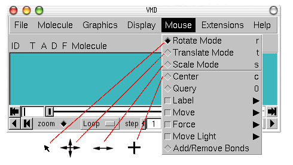 |
- 5
- The Scale
mode will allow you to zoom in or out by moving the mouse horizontally
while holding the first (left) button down.
It should be noted that the previous actions performed with the mouse
do not change the actual coordinates of the molecule atoms.
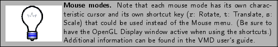
Another useful
option is the Mouse Center menu item.
It allows you to specify the point around which rotations are done.
- 6
- Select the Center menu item and pick one atom at one of the
ends of the protein. (The cursor should display a cross.)
- 7
- Now, press r, rotate the molecule with the mouse and see how
your molecule moves around the point you have selected.
VMD can display your molecule using a wide variety of
drawing styles. Here, we will explore those that can help
you to identify different structures in the protein.
- 1
- Choose the Graphics Representations... menu
item. A window called Graphical Representations will appear and
you will see in yellow Fig 4(a) the current
graphical representation used to display your molecule.
- 2
- In the Draw Style tab (b) we can
change the style (d)
and color (c) of the representation. In this section we will focus in
the drawing style (the default is Lines).
- 3
- Each drawing style has its own parameters. For instance, change
the Thickness of the lines by using the controls
on the right bottom part (e) of the
Graphical Representation window.
- 4
- Now, choose from Drawing Method the VDW
(van der Waals) menu item. Each atom is now represented by a sphere. In this
way you can see more easily the volumetric distribution of the protein.
Figure 4:
Graphical Representations window.
| 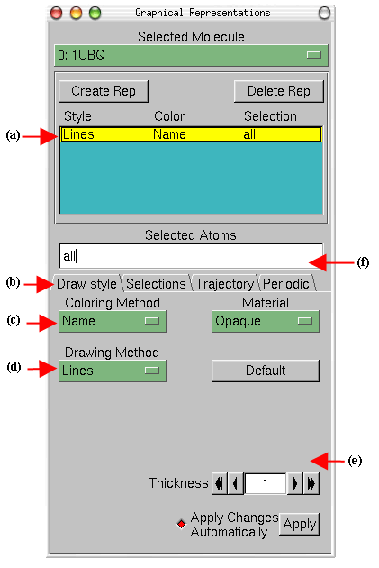 |
- 5
- In order to see the arrangements of atoms in the interior
of the protein, use the new controls
on the right bottom part of the window (e) to change the Sphere Scale to 0.5 and the Sphere Resolution to 13. Be aware that the higher
the resolution you choose, the slower the display of your molecule will be.
- 6
- Note that in the Name
coloring method, each atom has its own
color, i.e: O is red, N is blue, C is cyan and S is yellow.
- 7
- Press the Default
button. This allows you to return to the default
properties of the drawing method.
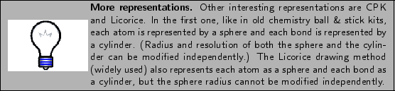
The previous representations allows you to see the micromolecular
details of your protein. However, more general structural
properties can be seen by using more abstract drawing methods.
- 8
- Choose the Tube style under Drawing Method and observe the backbone of your
protein. Set the Radius at 0.8.
- 9
- By looking at your protein in the tube mode, can you distinguish how
many helices,
 sheets and coils are present in the protein?
sheets and coils are present in the protein?
The last drawing method we will explore here is called Cartoon. It gives a simplified representation of a protein based in its
secondary structure. Helices are drawn as cylinders, sheets as solid
ribbons and all other structures as a tube. This is probably the most popular
drawing method to view the overall architecture of a protein.
- 10
- Choose the Cartoon style and set the Beta Sheet
Thickness as 3, the Helix/Coil Radius as 1.5.
- 11
- Identify now how many helices, betasheets and coils are present in
the protein.
Figure 5:
Licorice, Tube and Cartoon representations of Ubiquitin
| 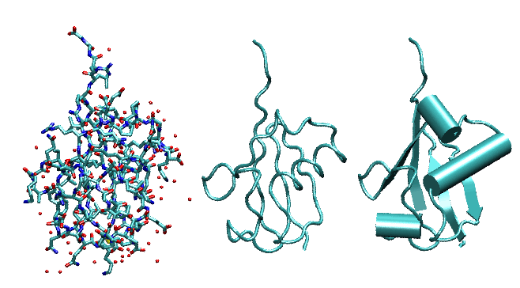 |
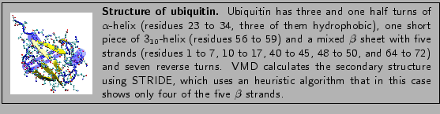
- 1
- Now, let's modify the colors of our representation. Choose
the ResType coloring method Fig. 4(c).
This allows you to distinguish non-polar residues (white),
basic residues (blue), acidic residues (red) and polar residues (green).
- 2
- Select now the Structure coloring method (c) and
confirm that the cartoon representation displays colors consistent with secondary
structure.
Let's look at different independent (and interesting) parts of
our molecule.
- 1
- In the Selected Atoms text entry Fig. 4(f) of the Graphical Representations
window delete the word all,
type helix and press the Apply button or hit the Enter key. (Do this
every time you type something.)
VMD will show just the helices present in our molecule.
- 2
- In the Graphical Representations window choose
the Selections tab Fig. 6(a).
In section Singlewords (b) you
will find a list of possible selections you can type. For instance,
try to display sheets instead of helices by typing the appropriate
word in the Selected Atoms text entry.
Combinations of boolean operators can also be used
when writing a selection.
- 3
- In order to see all that is not helix and not sheet, type the
following (not helix)and(not betasheet)
- 4
- In the section Keyword (c)
of the Selections tab (a)
you can see properties that can be used to select parts of a
protein with their possible values. Look at possible values of
the Keyword resname (d). Display all the
Lysines and Glycines presents in the
protein by typing (resname LYS)or(resname GLY). Lysines
play a fundamental role in the configuration of polyubiquitin chains.
- 5
- Now, change the current representation's drawing method to CPK style
and the coloring method to ResID by using the previous
described buttons in the Draw Style tab. In the
screen you will be able to see the different Lysines and Glysines.
How many of each one can you see?
- 6
- In the Selected
Atoms text entry type water. Choose the coloring method Name. You should see the 58 water molecules
(in fact only the oxygens) present in our system.
- 7
- In order to see which water molecules are closer to the protein
you can use the command within. Type water and within 3 of protein.
This selects all the water molecules that are within a distance of 3
angstroms of the protein.
Figure 6:
Graphical Representations window and
the Selections tab.
| 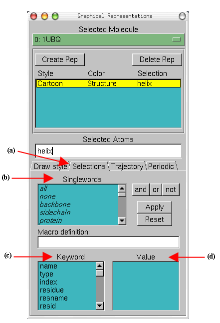 |
- 8
- Finally, try the following selections:
| Selection |
Action |
| protein |
Shows the Protein |
| resid 1 |
The first residues |
| (resid 1 76) and (not water) |
The first and last residues |
| (resid 23 to 34) and (protein) |
The  helix helix |
All the previous options provide you with a powerful tool to explore
different parts of your protein or molecule.
The button Create Rep Fig 7(a)
in the Graphical
Representations window allows you to create multiple representations and
therefore have a mixture of different selections with different
styles and colors, all displayed at the same time.
- 1
- Be sure that the current representation is in CPK style
and coloring method Name
- 2
- In Selected Atoms type protein.
- 3
- Press the Create Rep button (a).
Now, using the menu items of the Draw Style tab and the
Selected Atoms text entry, modify the new representation
in order to get Ribbons as the drawing method, Structure
as the coloring method, and helix as the current selection.
Figure 7:
Multiple Representations of Ubiquitin.
| 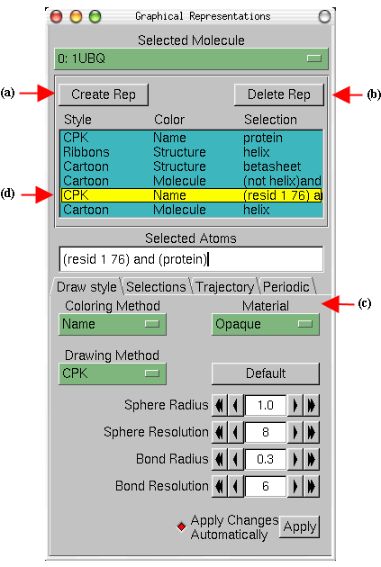 |
- 4
- Repeating the previous procedure, create the following three new
representations:
| Drawing Style |
Coloring Method |
Selection |
| Cartoon |
Structure |
betasheet |
| Cartoon |
Molecule |
(not helix) and (not betasheet) |
| CPK |
Name |
(resid 1 76) and (protein) |
- 5
- Create a
final representation by pressing again the Create Rep button.
Select the Cartoon drawing method, the
Molecule coloring method and type helix in the
Selected Atoms entry. For this last representation
choose in the Material section (c) the
Transparent menu item.
- 6
- Note that with the mouse you can select the different
representations you have created and modify each one independently.
Also, you can switch each one on/off by double clicking on it or
delete each one by using the Delete Rep button (b). At the end
of this section, the Graphical Representations window
should look like Fig. 7.
When dealing with a protein for the first time, it is very
useful to find and display different amino acids quickly. The
sequence viewer
extension allows you to pick and display one or more residues
easily.
- 1
- Choose the Extensions Sequence Sequence Viewer menu item.
A window Fig. 8(a) with a list of the amino
acids (e) and their properties (b)&(c) will appear in your screen.
- 2
- With the mouse, click over different residues (e) in the list and
see how they are highlighted. In addition, the highlighted residue will
appear in your OpenGL Display window in yellow and bond
drawing style, so you can visualize it easily.
- 3
- Using the Zoom controls (f) you can display the entire
list of residues in the window. This is especially useful for
larger proteins
- 4
- Using the shift key while pressing the mouse button allows you to
pick multiple residues at the same time. Look at residues 48, 63, 11 and 29
(e).
Figure 8:
Sequence window.
| 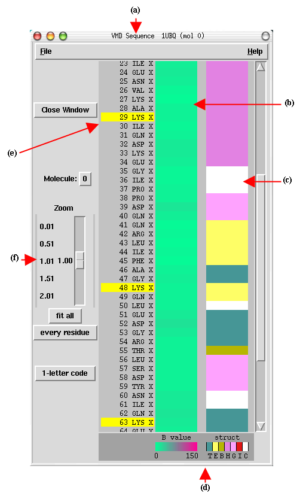 |
- 5
- Look at the Graphical Representations window, you should find a new representation
with the residues you have selected using the Sequence Viewer Extension. As you already did before,
you can modify, hide or delete this representation.
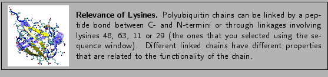
Information about residues is color-coded (d) in columns and obtained from STRIDE. The
B-value column (b) shows the B-value field (temperature
factor). The struct column shows secondary structure (d), where each letter
means:
Table 1:
Secondary Structure codes used by STRIDE.
| T |
Turn |
| E |
Extended conformation ( sheets) |
| B |
Isolated bridge |
| H |
Alpha helix |
| G |
3-10 helix |
| I |
Pi helix |
| C |
Coil |
|
The image that you have created using VMD can be saved,
along with all representations you have created, as a VMD state. This
VMD state contains all the information needed to start a new VMD session
from it, without losing what you have done.
- 1
- In the VMD Main window, choose the File Save State menu item.
Write an appropriate name (e.g., myfirststate.vmd) and save it.
The File Load State menu item will
allow you to load a previous saved VMD state, like the file you just saved.
Although the VMD state allows you to work with the image and
explore the properties of our protein using VMD, you usually need
pictures that can be used in articles or other kind of documents.
VMD can render the image you created and generate an image
file that can be used in other applications, as it is shown in the
following steps.
- 2
- Using all that you have learned until now, find an appropriate
view of the protein by scaling, rotating and translating the molecule. Turn
different representations on and off and improve the resolution and
different properties of the selections you have made. If you want
an image of good quality, put special attention to the resolution
of each representation.
- 3
- Be aware of the new representations you created with the Sequence Viewer Extension
and hide or delete them if it is neccesary.
- 4
- Before rendering the image, change
the background color by choosing the Graphics Colors
menu item. There, Choose the Display category,
the Background name and the 8 white color. The
background should be white now.
- 5
- Choose the File Render... menu item.
A window called File Render Controls will appear in your screen.
- 6
- You can render
the image using different packages. Pick TachyonInternal
in the Render using menu.
- 7
- Write the name of the file where the image will be saved in
the Filename text entry, i.e., picture (default is plot.tga).
- 8
- Press the Start Rendering button and the file
with your image will be created. Note that this could take some time.
You should end up with an image file named picture.tga (MacOS X
or Unix) or picture.bmp (on Windows).
- 9
- Close the application that opened the image file in order to continue
using VMD.
Now you are done with unit 1. We hope you have learned the basic
commands of VMD. Also, you have generated two files. The first one is a
VMD state that allows you to restart a VMD session and use/modify all
that you did in this unit. The second file is an image
file of your protein that can be used in some other application.
Next: Multiple Molecules and Scripting
Up: VMD Tutorial
Previous: Introduction
vmd@ks.uiuc.edu